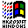

(Assuming PC keyboard)
echo $SHELL what do we have?
history show the history of cmds that
have been run ...;
history 20 show the last 20 cmds that
have been run ... ;
!912 run command #912 from the history list;
| CTRL+C |
kill foreground process (interrupt app/proc/task); |
| CTRL+Z |
suspend foreground process; |
| CTRL+Y |
suspend fg proc when it attempts to read input from terminal; |
| CTRL+P |
history / previous command; also ↑; |
| CTRL+N |
history / next command; also ↓; |
| CTRL+S |
history / search forward (give it some pattern to search for); |
| CTRL+R |
history / search backward (give it some pattern to search for); |
| CTRL+G |
return from the history search to what you were doing before; |
| CTRL+S |
(during long output) pause output; |
| CTRL+Q |
(after you paused output) resume output; |
| CTRL+A |
move cursor to the beginning of the line (also Home); |
| CTRL+E |
move cursor to the end of the line (also End); |
| CTRL+→ |
move cursor to the next word/delimiter (also ALT+F); |
| CTRL+← |
move cursor to the prev word/delimiter (also ALT+B); |
| CTRL+H |
backward delete char (also Backspace); |
| CTRL+D |
delete char at the cursor position (also Delete); |
| CTRL+W |
backward delete word; |
| CTRL+K |
erase the rest of the command line; |
| CTRL+U |
erase (clear) the whole command line; |
| CTRL+L |
clear screen; |
Navigation & operation
| CTRL+\ |
hotlist of directories |
| CTRL+PageUp |
move up in the dir tree (to the parent dir) |
| CTRL+R |
refresh (re-read) content of the current dir |
| ALT+I |
sync panels |
| CTRL+U |
swap panels |
| CTRL+O |
hide/show panels |
| ALT+. |
show/hide hidden [ files and dirs ] |
| ALT+R |
move selection bar to the middle of the panel (to the middle of the visible entries) |
| ALT+G |
move selection bar to the first visible entry |
| ALT+J |
move selection bar to the last visible entry |
| ALT+U |
move to the next directory in the history |
| ALT+Y |
move to the previous directory in the history |
| CTRL+S |
quick search |
| ALT+TAB |
autocomplete filename, cmd, etc |
| ALT+C |
open change dir dialog for active panel |
| SHIFT+↓ |
select/unselect (tag, mark) entry and move down (also Insert) |
| SHIFT+↑ |
select/unselect (tag, mark) entry and move up |
| + |
select a group of files (regex can be used) |
| \ |
unselect a group of files (regex can be used) |
| ALT+* |
reverse selection |
| ALT+Enter |
insert the current object in the cmd line |
| ALT+A |
insert the path of the active panel in the cmd line |
| ALT+SHIFT+! |
open the filtered view dialog |
| ALT+SHIFT+? |
open the find file dialog |
| ↑ |
move selection bar to the prev entry (also CTRL+P) |
| ↓ |
move selection bar to the next entry (also CTRL+N) |
| PageUp |
move selection bar one page up |
| PageDown |
move selection bar one page down (also CTRL+V) |
| Home |
move selection bar to the first entry |
| End |
move selection bar to the last entry |
Main mode and view mode
| Key |
Main mode |
View (ASCII) |
View (Hex) |
| F1 |
help |
help |
| F2 |
user menu |
unwrap |
edit |
| F3 |
view |
quit view mode |
| SHIFT+F3 |
view raw file, ignore ext |
|
| F4 |
edit file |
toggle ASCII/Hex |
| SHIFT+F4 |
create a new file |
|
| F5 |
copy file/dir |
goto |
| F6 |
rename/move file/dir |
|
save |
| F7 |
create a new dir |
search |
hex search |
| F8 |
delete file/dir |
raw |
| F9 |
top menu |
format |
| F10 |
quit Midnight Commander |
quit view mode |
Built-in editor
| Key |
Action |
| F3 |
begin/end text selection |
| SHIFT+F3 |
begin block text selection |
| F5 |
copy selected text to the curr cursor pos |
| F6 |
move selected text to the curr cursor pos |
| F7 |
search for the specified text sample |
| F8 |
delete selected text |
| ALT+L |
go to the specified line number |
| ALT+U |
exec external cmd and insert output at the cursor pos |
| CTRL+F |
save selected text in an external file |
| CTRL+K |
delete chars to the end of line |
| CTRL+S |
toggle syntax highlighting |
| CTRL+U |
undo |
| CTRL+X |
go to the end of the next word |
| CTRL+Y |
delete current line |
| CTRL+Z |
go to the beginning of the prev word |
| SHIFT+F5 |
insert content of an external file at the cursor pos |
| ALT+SHIFT+- |
hide/show TABs and trailing spaces |
The following key shortcuts may not work in Gnome-terminal!
| CTRL+L |
repaint all |
| CTRL+X+C |
run chmod |
| CTRL+X+O |
run chown |
| CTRL+X+L |
run hard link cmd |
| CTRL+X+S |
run absolute symlink cmd |
| CTRL+X+V |
run relative symlink cmd |
| CTRL+X+I |
set the other panel display mode to information |
| CTRL+X+Q |
set the other panel display mode to quick view |
| CTRL+X+! |
run the external panelize cmd; external panelize allows you to exec an external program
and make the output of that program the contents of the current panel |
| CTRL+X+H |
run the add dir to hotlist cmd |
You can get more info about Midnight Commander at
|  |
Some experts use the term Super key in the description of Linux key-combination. I prefer
to call it Win key. On a standard PC keyboard this is a key with the MS Windows logo on it. |
|
|
Gnome Terminal
| CTRL+ALT+T |
Start a new Gnome Terminal |
| CTRL+SHIFT+T |
Create a new tab in active Gnome Terminal |
| CTRL+PGDN |
Switch to the next tab in active Gnome Terminal |
| CTRL+PGUP |
Switch to the previous tab in active Gnome Terminal |
| CTRL+SHIFT+PGDN |
Move tab to the right in active Gnome Terminal |
| CTRL+SHIFT+PGUP |
Move tab to the left in active Gnome Terminal |
| ALT+1 |
Switch to the tab # 1 in active Gnome Terminal |
| ALT+2 |
Switch to the tab # 2 in active Gnome Terminal |
| CTRL+SHIFT+C |
Copy from active Gnome Terminal |
| CTRL+SHIFT+V |
Paste into active Gnome Terminal |
Navigation
| Win |
Activities overview; switch between the Activities overview
and desktop; in the overview, start typing to instantly search your apps, contacts, docs) |
| Win+F1 |
| ALT+F1 |
| ALT+F2 |
command window (run console) |
| Win+A |
show the list of apps |
| Win+M |
open/close the message tray |
| Win+N |
focus Notification |
| ALT+ESC |
switch between windows in the current workspace |
| ALT+SHIFT+ESC |
switch between windows in the current workspace (reverse order) |
| Win+TAB |
switch to the next window |
| Win+SHIFT+TAB |
switch to the previous window |
| ALT+TAB |
switch to the next app |
| ALT+SHIFT+TAB |
switch to the previous app |
| ALT+F6 |
switch to the next window of the current app |
| Win+` |
| ALT+SHIFT+` |
switch to the prev window of the current app |
| Win+SHIFT+` |
| Win+F10 |
open the application menu on the top bar |
| Win+L |
lock the screen |
| CTRL+ALT+DEL |
log out/power off (?) |
Window management
| ALT+F4 |
close current (active) window (exit app) |
| ALT+F5 |
restore (unmaximize) active window |
| Win+↓ |
| ALT+F7 |
move current window (using arrow keys) |
| ALT+F8 |
resize current window (using arrow keys) |
| ALT+F10 |
maximize active window |
| Win+↑ |
| Win+H |
minimize (hide) active window |
| Win+D |
minimize/restore (toggle) all windows |
| Win+← |
maximize a window vertically along the left side of the screen; press again to restore
the window to its previous size; use the following key combination to switch sides |
| Win+→ |
maximize a window vertically along the right side of the screen; press again to restore
the window to its previous size; use the previous key combination to switch sides |
| ALT+SPACE |
pop-up the window menu (like the right-click on the titlebar) |
| CTRL+T |
Create a new tab in active "Files" browser |
Workspace navigation
| Win+PageDown |
switch to next workspace |
| CTRL+ALT+↓ |
| Win+PageUp |
switch to previous workspace |
| CTRL+ALT+↑ |
| Win+SHIFT+PageDown |
move window and switch to next workspace |
| Win+SHIFT+PageUp |
move window and switch to prev workspace |
Screenshots
| PrtScrn |
take a screenshot of the selected area (press PrtScrn, select area,
press Enter) |
| Shift+PrtScrn |
take a screenshot of the entire screen |
| Alt+PrtScrn |
take a screenshot of a certain window |
When you make a screenshot, the image is auto saved in your ~Pictures/Screenshots/ folder, the file name will be
Screenshot*.
Other useful Gnome Shell commands
Open command window (ALT+F2), and
- type
r to restart Gnome Shell;
- type
rt to reload Gnome Shell theme;